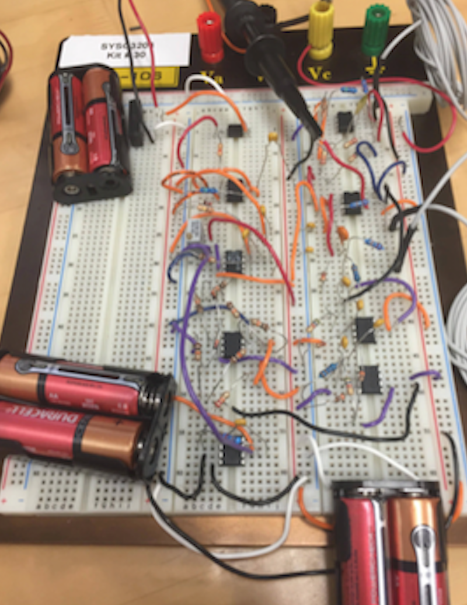

September 2017 - December 2017
The image above represents the overall plan of the Flappy bird project. By starting from the top left, three electrode leads will be connected from the forearm muscles to an instrumentation amplifier incorporating a circuit for common mode rejection. The signal will then be band-pass filtered in accordance with EMG signal bandwidth. Since the EMG signal is not rhythmic in nature, typical signal processing usually consists in rectification and integration. A comparator with hysteresis will then compare the integrator output to a threshold before triggering a monostable circuit that will send a pulse through an optoisolator to relay that will activate the left button of the mouse which will enable the user to play a game of Flappy Bird.
The image above represents the overall plan of the Flappy bird project. By starting from the top left, three electrode leads will be connected from the forearm muscles to an instrumentation amplifier incorporating a circ.
The above is a video demonstrating the progression of the forarm signal. In the video you can see me contracting my forearm which is recongized in the circuit and is being registered. However, some noise interference is occuring which makes the signal less responsive and clear.
The above is a video demonstrating the progression of the forarm signal. In the video you can see me contracting my forearm which is recongized in the circuit and is being registered. However, some noise interference is occuring which makes the signal less responsive and clear.